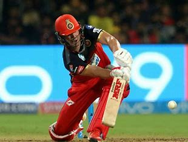
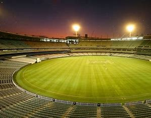

Welcome to Cricket World
Cricket is a bat-and-ball game played between two teams of eleven players on a field at the center of which is a 22-yard pitch with a wicket at each end, each comprising two bails balanced on three stumps.
The game is played by 120 million players in many countries, making it the world's second-most popular sport. The game is most popular in Australia, England, the Indian subcontinent, the West Indies, and Southern Africa.